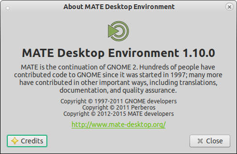

MATE 1.10 released
After 15 months of development the MATE Desktop team are proud to announce the release of MATE Desktop 1.10. We would like to thank every MATE contributor and user.

What’s new in MATE 1.10
The headline changes in MATE 1.10 are:
- Every component of MATE can now be built with GTK2 and GTK3.
- GTK3 support is still considered experimental
- Arch Linux and Fedora currently offer alternative GTK3 builds.
- [GSoC 2014] Caja now has an extension manager so plugin can be enabled/disabled at run-time.
- [GSoC 2014] Atril now supports ePub.
- [GSoC 2014]
libmatemixer, an audio mixer library for MATE desktop, has been introduced.- Provides an abstract API allowing access to mixer functionality available in the PulseAudio, ALSA and OSS sound systems.
- Static code analysis has resulted in many memory leaks being plugged.
- Theme support has been expanded to GTK 3.8 to 3.16 including CSD and pop-over support.
The various components of MATE 1.10 are available for download here:
Screenshots
Changelog
Here is a more detailed break down of what has changed.
mate-common
- Added support for
automake1.15 - Added support for
lcov1.11 - Migrated to
glib-gettexizeif using GLibgettext - Check for
appdata-xml.m4withAPPDATA_XML
mate-desktop
- Migrated
MateRRScreen,GnomeRRConfigandGnomeOutputInfoto GObject. - Added GObject Introspection
- Added automatic-mnemonics key for GTK
xsetting - Added
MateAboutDialogclass to have traditional about dialog with GTK3 - Added
MateColorButtonclass to have traditional color selection dialog with GTK3 - Added
org.mate.debugGSettings schema - Uses
GDK_WINDOW_XIDfor inter-GTK compatibility - Updated
mpastefor website change - Updated translations
- Removed desktop-docs
- Removed user guide
- Removed
libuniqueoptional dependency - Assorted RANDR fixes
libmatekbd
- Updated translations
- Assorted bug fixes
libmatemixer
libmatemixer is a new mixer library for MATE desktop. It provides an abstract
API allowing access to mixer functionality available in the PulseAudio, ALSA
and OSS sound systems.
- Initial release
libmateweather
- Updated translations
- Assorted bug fixes
mate-icon-theme
- Added more icons
- Added new symbolic icons
Caja
- Added a plugin manage to allow extensions to be enabled/disabled at runtime
- Updated translations
- Assorted bug fixes
mate-polkit
- Updated translations
Marco
- Use
zenityinstead ofmate-dialogs - Updated translations
- Assorted bug fixes
mate-settings-daemon
- Migrated to
MateRR*API changes. - Migrated media-keys plugin to
libmatemixer - Updated translations
- Removed GStreamer and made
libmatemixer,libcanberraand PulseAudio optional dependencies
mate-session-manager
- Disabled
upowersupport by default, use--enable-upowerif you need it - Updated translations
mate-menus
- Updated translations
- Assorted bug fixes
mate-panel
- Fixed the size of the
showdesktopicon. - Fixed deprecated use of GDK pointer API (GTK3)
- Migrated all
GtkStyletoGtkStyleContext(GTK3) - Migrated
gtk_rc_parse_stringtoGtkCssProvider(GTK3) -
GDK_KEY_*is also used in Gtk+ 2.24.x - Removed the vbox from
panel-addtoas it is deprecated - Updated translations
- Assorted bug fixes
- Check allocated size before creating the shadow pixbuf in the clock.
- Disconnect show and deactivate menu signals before destroying the applet menu
- Handling of
SYSTEM_TRAY_CANCEL_MESSAGE - Correct implicit declaration of function of
gdk_x11_set_sm_client_id - Added a gtkimage with the current pixbuf to button-widget
- Use gtk icon cache instead of custom one
mate-backgrounds
- Added Ubuntu MATE wallpapers without branding
- Added new MATE-Stripes-Dark.png, MATE-Stripes-Light.png wallpapers
mate-themes
- Added support for GTK 3.16, 3.14, 3.12, 3.10 and 3.8.
- Added many improvements for MATE GTK3 applications
- Added transition effects to buttons and menuitems when using GTK3
- Added support for CSD applications
- Added support for popovers
- Enable window shadows for CSD applications
- Enable regular icons for window controls
- Disable use of symbolic icons
- Use mate logo for spinner animation
- Refactor GreenLaguna
- Refactor ContrastHigh themes
- TraditionalOKTest is installable with normal configure flags
- Many other fixes and refinements
mate-notification-daemon
- Assorted bug fixes
- Updated translations
mate-control-center
- Added option to configure titlebar buttons layout
- Added support for
metacity-theme-2.xml - Added support for office applications in Preferred Applications
- Migrated to
MateRR*API changes - Updated translations
mate-screensaver
- Migrated to
MateRR*API changes - Updated translations
mate-media
- Removed PulseAudio dependency
- Removed
gst-mixerandgst-mixer-applet - Updated mate-volume-control:
- Migrated from PulseAudio to
libmatemixer - Allow selecting input and output connectors
- Speaker test widget now contains a Close button
- Device and stream lists are now sorted
- Do not show icons when on a vertical panel
- Allow clicking in the popup window
- Migrated from PulseAudio to
- Updated translations
mate-power-manager
- Added support for
upower0.99+ - Updated translations
- Removed
udisksdependency
mate-system-monitor
- Back ported improvements from GNOME System Monitor
- Updated translations
- Assorted bug fixes
Atril
- Added epub support
- Added xz compression support
- Added rotate with CTRL+left and CTRL+right in presentation mode
- Added support for
bsdtarto the comics backend. - Added support
pdf.xzfiles to the PDF backend. - Added support for external links to EvViewPresentation
- Added EvBookmarks to handle internal document bookmarks
- Added support for OCG State actions to the PDF backend
- Added saving the zoom factor in default settings when sizing mode is free
- Added
pngextension when saving images using drag & drop - Added timestamp parameter to SyncView
- Added ini file for Caja extension
- Added appdata file
- Implemented
document_links_find_link_page()in the PDF backend - Implemented document_links_find_link_page()` in the djvu backend
- Migrated to
find_link_page()instead offind_link_dest()inget_dest_page() - Fixed remembering the current page when document is reloaded in presentation mode
- Fixed resolving named destinations in the PDF backend
- Fixed sidebar-thumbnails to connect to job finished signal before scheduling the job
- Fixed drawing glyphs with transparency in the DVI backend
- Fixed several security issues in the DVI backend
- Fixed several accessibility issues.
- Fixed segmentation faults and many memory leaks
- Updated to
poppler0.16.0 API changes - Migrated to
MateAboutDialogfromlibmate-desktop - Updated translations
- Assorted bug fixes
caja-extensions
- Added new ‘Set as wallpaper’ extension
- Re-introduced the option to select
send-toplugins to build - Updated translations
Engrampa
- Added compressing of iso images and tar archives from the Caja menu
- Added overwrite confirmation dialog when extracting files with drag & drop
- Added keywords key to
.desktopfile - Added ini file for Caja extension
- Added
engrampa.appdata.xml - Fixed opening RAR files inside a RAR file
- Fixed errors with some password protected files
- Fixed loading of multi-volume RAR archives with 7zip
- Fixed crash when clicking Cancel in Add Files
- Fixed hyphen-as-minus-sign issues for
engrampa.1man page - Fixed memory leaks
- Removed support for Gtk+ < 2.24
- Removed support for Glib < 2.32
- Use Caja GSettings schema optionally
- Use
g_get_user_config_dirinstead of hardcoded~/.config/mate - Use
GtkRecentAction objectsto create the recent file choosers - Do not set the selected app as the system default
- Do not set the “last output” dialog as modal to allow the user to resize it
- Updated translations
- Assorted bug fixes
Eye of MATE
- Back ported improvements from Eye of GNOME
- Updated translations
- Assorted bug fixes
mate-applets
- Migrated to
MateAboutDialogfromlibmate-desktop - Updated translations
- Assorted bug fixes
mate-netbook
- Fixed Windows Picker applet forcibly changing Maximus settings
- Migrated to
MateAboutDialogfromlibmate-desktop - Updated translations
- Assorted bug fixes
mate-netspeed
- Added network load graph made similar to MATE System Monitor graphs
- Updated translations
- Assorted bug fixes
mate-sensors-applet
- Updated translations
- Assorted bug fixes
mate-terminal
- Migrated to common function in
libmate-desktop - Updated translations
mate-user-share
- Updated translations
- Assorted bug fixes
mate-utils
- Updated translations
- Assorted bug fixes
Mozo
- Updated translations
Pluma
- Migrated to
MateAboutDialogfromlibmate-desktop - Updated translations
- Assorted bug fixes
python-caja
- Added About Extension button to the Extensions tab in Caja
- Assorted bug fixes